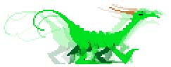

Cyber Paint
Cyber Paint—created by Jim Kent—was a 2D animation program that brought together a wide variety of animation and paint functionality and the delta-compressed animation format developed for CAD-3D. The user could move freely between animation frames and paint arbitrarily, or utilize various animation tools for automatic tweening movement across frames. Cyber Paint was one of the first, if not the first, consumer program that enabled the user to paint across time in a compressed digital video format.
{kind=link}
Jim Kent got his BA and MA in math at the University of California at Santa Cruz. He had also taken art classes, which primed him for interest in computer graphics. His first graphics programming was on the Radio Shack Color Computer, first in BASIC, then in Assembly. Jim’s first job after getting his MA was at Island Graphics, where he adapted their paint program MicroIllustrator to the Color Computer.
His second project at Island Graphics was Aegis Animator for the new Amiga computer. Jim relates:
I’d seen recently a demo of an Apple program that used polygon-tweening. (This program was eventually released as Phantavision.) Tweening seemed like a brilliant labor-saving idea for animation. To the tweening I added moving, rotation and resizing. You could add and subtract points from the polygons as well—which was probably the gnarliest part to code. Finally I added moving cels (bitmaps with a mask so that some pixels could be transparent) and a background. The program was originally implemented on a Sun workstation because we were developing it concurrently with the Amiga. It was ported to the Amiga as the hardware became available. The program was written mostly in C with a few speed critical routines in 68000 assembler.
{kind=link}
Aegis Animator
The Amiga and the Atari ST computers were released almost concurrently, and became fierce competitors in a healthy home computer market. This burgeoning market proved attractive to Jim:
After the Aegis Animator was released Island wanted to go into the professional market. I wanted to stay in the home market and port the program to the Atari ST. We worked out a deal where I’d have rights to the source code in exchange for my accumulated vacation time and agreeing to support the Amiga version. I started my own company then—Dancing Flame. While I ported Animator I added better support for color cycling and made it so that you could make an entire animation a single object inside of another animation. ...
Cyber Paint cel animation
(by Doug Thomas)
I loved the polygon tweening aspects of Animator myself, but I found to my surprise that many artists were using it just to flip between cels they created in a paint program. It seemed to me quite a hassle to create the cels in one program and then import them into another, then line the cels up just right. I figured if that’s what they wanted to do I’d give them a program designed expressly for that purpose.
{kind=link}
Flicker
Jim’s response was to create Flicker. Flicker is a paint program with a twist: within memory limitations, the user can create multiple pictures that can be flipped through as an animation. True to Jim’s intent, Flicker introduced blueing features, which allow a computer-based cartoonist to approximate the onion skin technique familiar to traditional cartoonists. (For detailed information on Flicker, click here.)
Now, while developing the Atari version of Aegis Animator, simple fate set the stage for Cyber Paint:
[Gary Yost] lived in my neighborhood and saw me testing the ST [Aegis] Animator in one of the local computer stores. He wanted the Aegis Animator, but sadly I had inherited a right of first refusal contract for the ST port with Aegis software—a publisher that had little presence in the ST market. Gary saw Flicker, which I’d done in just about a week, and didn't regard it as a commercial product. He suggested I publish it in START, Antic’s ST magazine. At START I met Heidi Brumbaugh. I fell in love with her, so I liked hanging around Antic. While I was there Gary showed me some movies made with Tom Hudson’s programs rendered and delta-compressed. Delta compression was a revelation. I realized with it you could do a version of Flicker that would handle hundreds of frames rather than ten or twelve. Thus was born Cyber Paint.
A CAD-3D animation with CyberPaint lightning and image compositing (by Jon Bell)
Cyber Paint is Flicker, but significantly expanded and with the critical adaptation to use Mark Kimball’s delta compression. In fact, Cyber Paint’s native format (SEQ) actually took the original delta compression format (DLT) a step further with a little more rigorous data management. Jim explains:
The SEQ format separated the screen into bit planes and did vertical run length compression of the bit planes. This was quite a bit denser than DLT, something like twice as dense. Since at the time many of the users used floppies, it was worthwhile to store the animations in a more dense format. The CPU time it took for the compression and [de]compression was generally less than the disk I/O time it would take to write something larger. Plus, of course you could store longer animations that way. Once you had a hard disk DLT files were probably faster to load and save though.
Various Cyber Paint menus
One of the special aspects of Cyber Paint is its interface, which is strikingly timeless and elegant. Unlike most post-Macintosh software, which is given a homogeneous look and feel, Cyber Paint has a direct, custom interface, vaguely reminiscent of Quantel’s broadcast graphics systems:
From the Aegis Animator experience I realized it was good to have the 'time'-oriented controls at the top level of the user interface in an animation package. Since time is symmetrical going forward and backwards I made the controls symmetrical as well. This was the first place I put the frame number on the knob of the slider that controlled the frame. I liked it because it saved screen real estate. (I’ve always preferred programs that let the user see mostly their work rather than mostly program controls.)
Aegis Animator, Flicker and Cyber Paint all shared similar drop-down menus, although for the latter two products, Jim designed them to better get out of the way of the artist when they weren't needed. To supplement the drop-downs, Jim sketched out and coded a stacking control panel at the bottom of the screen that always featured time navigation controls. This interface remained fundamentally unchanged through the subsequent Autodesk Animator and Autodesk Animator Pro products.
Postscript: Cyber Paint after the Atari
Eventually, Jim Kent went on to create the PC applications Autodesk Animator and Autodesk Animator Pro for Yost Group, each of which was a direct evolution from the original Cyber Paint. These subsequent PC products benefited from a full 256-color VGA palette (out of 16 million colors) and the ability to play animation directly off a hard drive, permitting significantly longer, more elaborate animations. Animator Pro took the technology to significantly higher screen resolutions. Animator Pro became a legendary tool in computer game development, though it has gradually become irrelevant in the age of modern graphics accelerators. Products such as Pinnacle Systems Commotion Pro, Discreet Combustion, NewTek Aura and various Quantel products all do on a grand scale with millions of colors the sorts of things that Cyber Paint did, but seldom with the elegance of this original software.
This line of software development never quite made it beyond MS-DOS. Autodesk hired Jim and several other programmers to produce a new product that would bring Autodesk Animator Pro to Windows and, simultaneously, take it beyond paletted graphics to “truecolor” (arbitrary use of color). Unfortunately, this new product, Animator Studio, fell victim to typical corporate shenanigans, prompting Jim to move on:
Animator Studio started off well, but ended badly. Half way through the project the Autodesk Multimedia division got a new manager who had a large bonus tied to shipping the Animator at a certain date. He forced shipment in spite of the program still being half-baked at the time. I was very embarrassed by the program’s flakiness and poor performance. The UI was quite nice, but that doesn't mean much if the program isn't reliable.
Animator Studio was indeed released as a product, but could not succeed. Jim ultimately returned to school and recently completed his PhD, this time in Molecular Cell and Developmental Biology from UC Santa Cruz.
In the course of this study I did the first public assembly of the human genome and produced the human genome browser at http://genome.ucsc.edu. I’m now focused on figuring out how the body knows which parts of the genome to use in which cells: how crystallin is produced only in the lens of the eye, and hemoglobin only in the red blood cells. All the animation programming experience is actually proving surprisingly useful. Animation and Genomics both deal with very large data. Both can be quite complex, so it takes a little art to keep the user interface from becoming mind-boggling.
Tweening
The term, short for “in-betweening”, and the concept derive from traditional hand-drawn cel animation production where a master animator draws “key frames” of cartoon characters and assistants draw the frames in-between, interpolating how they should look from the master’s lead.
Given the right instructions, a computer can mathematically interpolate in-between frames just as it has below between two different stars.

Onion Skinning
In traditional, hand-drawn cel animation, each original frame was typically first drawn on tracing paper, so that previous (and subsequent) drawings could be seen through the paper. Because the artist could see other frames through the one he was drawing, it was considerably easier to maintain consistency through the animation.
Paged management
Generally, the ability to work with a larger block of information than will fit in memory at once, by moving the parts that aren't needed at the moment to disk.
Travelling matte
The travelling matte is an animation concept inherited from the world of the traditional animation stand photography; basically, the travelling matte is a stencil (or set of stencils) that can move and change shape over time to reveal or occlude whatever is behind it.
Optical printing
Real optical printing is the re-photography of backlit film, sometimes with an intervening matte or other means of modifying the resulting image. Computers follow a similar process (metaphorically) when they re-process sequences of frames that comprise an animation or video.
Bit plane
In this context, each pixel of an image contains numerical data that refers to an indexed color (in a CLUT) and those numbers behind each pixel can be further decimated for the purpose of data compression. A bit plane is one image-worth of such decimations.
Run-length Compression
Also known as run-length encoding (RLE), this simple form of compression takes advantage of repetitive sequences of data. For example, it is more efficient to represent AAAAAAAAAAAAAAAAAAAA as 20A.
Assembly language
The most rigorous and fundamental language available to a programmer for developing software; typically only used to develop extremely optimized mathematical algorithms. Assembly language programming generally requires special expertise.
BASIC
A computer language designed by Dartmouth computer scientists in the 1960s to be easy to learn and use (intended for students as an introduction to computer programming); virtually every general computer system since has had at least one variant of BASIC implemented for it. The language has evolved into various forms over the decades, perhaps most notably those produced by Microsoft starting in the late 1970s.
CLUT (Color Look-up Table)
A set of indexed registers, each containing numbers representing colors. On the Atari ST, the CLUT kept track of whichever sixteen colors were in use on-screen at any given moment.
Color cycling
Like many other computer systems of its day, the Atari ST used an indexed color scheme for its color graphics. Indexing meant that each dot (pixel) on the screen referred to any one color in a finite palette, known as a color look-up table (CLUT). Color cycling was nothing more complex than dynamically re-assigning some or all of the colors in the palette, thus affecting all the applicable pixels on the display. The results of color cycling could be quite dramatic.

True color
Where eight bits of data are used to represent each red, green and blue component of each pixel (3 bytes per pixel) for a total of approximately 16 million unique shades of color. More accurately known as 24-bit color.
User Interface (UI) and Graphical User Interface (GUI)
Computer programs don't actually do anything visible to the user unless the programmer goes out of the way to include visual features. These features, which often the user can interact with through a mouse or keyboard, constitute a user interface. Graphical User Interfaces further infers a level of visual sophistication in the interface beyond computer terminal text.